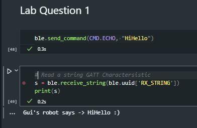
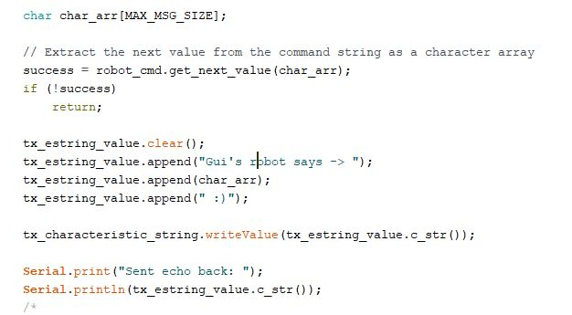
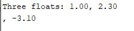
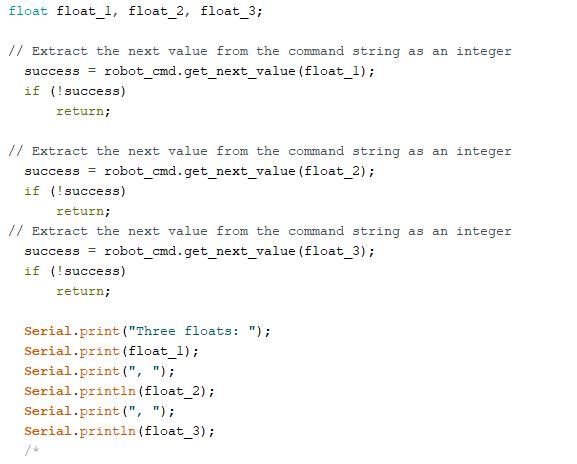
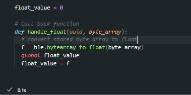
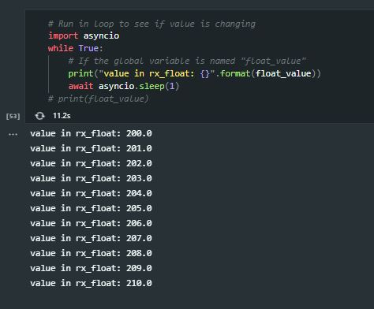

The purpose of lab 2 was to setup Bluetooth the Artemis Nano board with the Arduino IDE and python commands, and ensure all proper functioning of functions. This includes sending and reading over Bluetooth
The following functionalities were tested during this lab:
1. ECHO command
2. SEND_THREE_FLOATS command
3. Notification Handler
For this step of the lab, an ECHO command was sent from the computer to the Artemis board over the established connection (see lab handout)
The ECHO receiving code was written in Arduino to extract the character array received from the computer, and then convert this string into a string to be sent with the addition of '"Robot says -> " + char_arr + " :)"'
This resulted in the following succesful output on the Arduino Serial Monitor:
Artemis Nano Bluetooth ECHO:
Artemis Nano Bluetooth code:
This step of the lab consisted of reading three floats being sent from the computer to the Artemis nano. On the Artemis nano end, the three values needed to be read and stored in seperate values. This was done to then print out the received values on the serial Monitor of the Arduino IDE.
On the sending side of things, a the send_command method was called to send the three bytes to the bluetooth receiver's address.
This resulted in the following ouput on the Arduino IDE Serial Monitor:
Artemis Nano Bluetooth SEND_THREE_FLOAT
Artemis Nano Bluetooth SEND_THREE_FLOAT code
The third part of the lab consisted of writing a notification handler to handle continuous reading of changing float values originating from the Artemis nano. The notification handler itself is called by start_notify, a function part of the BLE class supplied by the lab manual and zip file.
The notification handler was defined as follows:
Python Notification Handler code:
This resulted in the following ouput (on the computer):
Jupyter Notebook continuous float read output:
- - - - - This concludes Lab 1 - - - - -